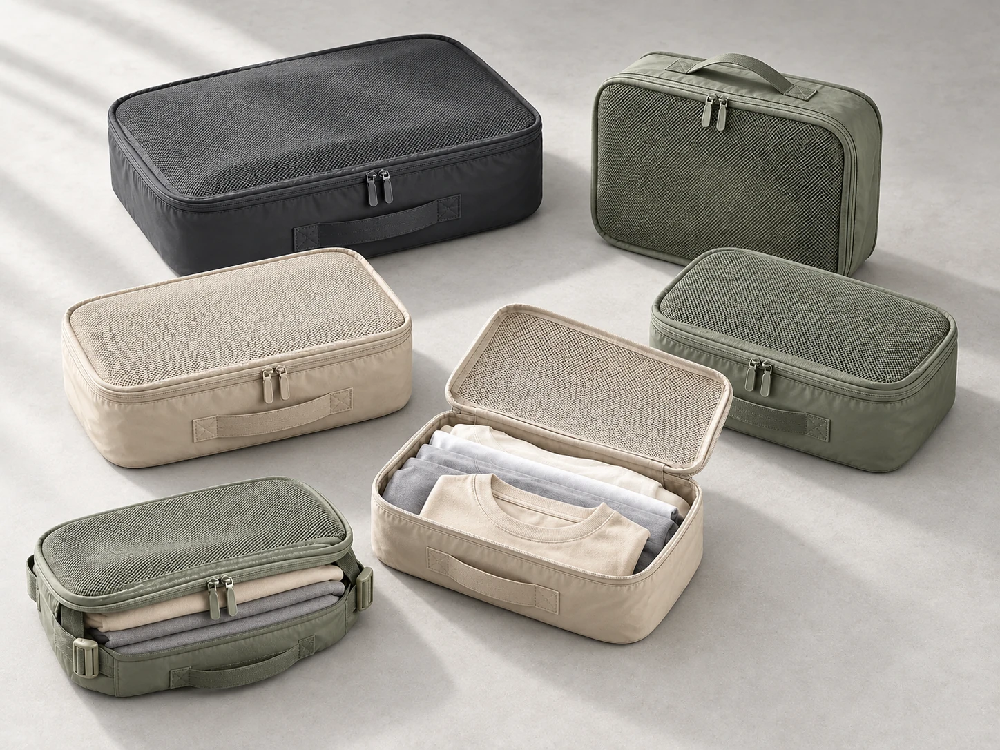
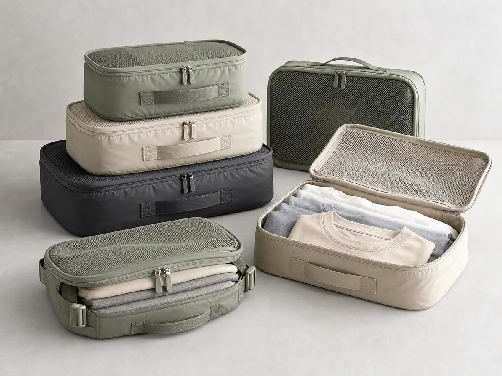

同一份商品资料，
衔接日常经营。
从发现机会到审核上架，统一关联资料、草稿与待办，减少重复录入。
整理需求、竞品、价格带和候选方向，说明依据与尚未确认的假设。
接收图片、链接和规格，区分商家资料、公开来源与 AI 建议。
依据商品资料生成标题、描述、类目与属性建议；已连接店铺的政策按条件预填。
生成或处理主图、场景图、详情内容和视频脚本，审核后选用。
基于订单和商品资料生成回复建议；退款、补偿和敏感承诺交商家确认。
发布、退款、预算和敏感承诺等动作，统一在执行前核对与确认。
从商品资料，到刊登确认。
在 AI CEO 布置任务，在对应模块编辑与审核。同一商品的资料、Listing 和图片相互衔接，不必重复录入。
AI CEO
选品与上架
素材工坊
确认中心
提出需求，
继续当前商品任务。
在 AI CEO 提交经营目标或商品资料，发起调研、Listing 或素材任务。查看对话中的结果，再进入对应模块编辑和核对。
同一商品，持续处理
查看 AI CEO 演示
布置任务 → 查看结果 → 编辑与核对
先判断方向，
再落实商品。
按目标市场整理需求、竞品、价格参考与风险，形成报告和候选建议。无货源商家自行确认真实货源；已有商品可直接完善资料，调研不是必经步骤。
选定方向后继续
查看调研报告演示
确认真实货源，再导入商品链接、图片与规格。
旅行收纳方向观察
候选方向比较使用场景、组合方式与商品展示，形成可追溯的选品依据。
- 需求场景
- 旅行行李分类收纳
- 对比维度
- 组合、尺寸、材质、价格
机会假设
通过清楚展示组合与实际收纳过程，帮助买家理解不同款式的用途。
需用市场数据验证，不等于销量或收益承诺。来源与待验证项竞品链接 · 采集时间 · 价格区间 · 供货可行性
候选可导入待补资料的 Listing 草稿；补齐真实来源与商品事实后继续。
打开报告演示AI 生成文案，
你可逐项编辑。
根据已保存的商品事实生成标题、描述、类目与属性建议，在捷境内修改。店铺连接且资料可用时，预填库存地点及配送、付款、退货政策。
与素材工坊衔接
多件商品？查看批量铺货演示
查看 Listing 编辑演示
图片送回同一份 Listing；资料核对后，进行发布前检查。

画面需求示例
把这套收纳袋重新排成有层次的整套陈列，保留六件组合、配色和外观。
整套商品示例 · AI 生成示例，不实时生成、不扣点；不代表实物审核通过。
生成商品素材，审核后用于刊登。
在 AI CEO 提出画面需求，或进入素材工坊选择用途、提交来源图。生成图片关联当前商品，可送回 Listing；发布前核对实物一致性、图片权利与平台要求。
- 1提供来源图与规格
明确商品事实和图片使用权。
- 2指定用途与构图
整套陈列、使用场景或细节。
- 3核对并用于 Listing
商品外观与使用权确认后，选用合适图片。
查看这组图片的参考图

核对最终内容，
确认本次操作。
在选品与上架完成发布前检查，再将确认单送至确认中心。保存 eBay 未发布草稿与正式发布是不同操作，各自确认后才执行。
关键操作执行前确认
查看确认中心演示
商品、图片、价格库存、物流政策与账号条件共同决定能否执行。
来自选品与上架发布前检查
缺失字段返回对应页面补充；检查本身不会发布。
两项独立操作，各自确认
- 保存 eBay 未发布草稿
保存至卖家账号，不公开展示。
- 正式发布
确认最终参数后执行；成功后返回 eBay 商品编号与结果。
资料缺失或账号受限时，可保留草稿，按提示处理后继续。
交互演示 · 编辑资料、核对素材、查看确认项打开完整工作台演示
正在查看：需求对话
根据货源情况，选择合适的起点。
AI CEO 协助判断方向、整理资料；真实货源与商品事实由商家提供并确认。
已有商品，直接生成刊登内容。
系统整理商品事实、生成 Listing 与素材草稿；缺失的尺寸、重量、成本、库存和图片权利会集中列出，商家在捷境内补齐并核对。
尚未选品，从市场调研开始。
捷境生成市场方向和候选建议，不把候选直接当成可销售商品。找到真实货源后，再进入商品资料、Listing 与图片视频流程。
来源可追溯，商品事实由商家确认。
侵权风险初筛，仍需商家核对
图片权利、供应能力、成本、库存、规格与店铺政策，均需依据真实资料核对。
选择适合经营规模的方案。
免费体验不绑卡、不自动续费。登录后可在设置中心查看当前可购买方案与准确金额。
捷境支持准备商品资料、生成 Listing 与素材，并在店铺授权、套餐权限、资料与预检条件满足后，由你确认，通过 eBay API 正式发布。订阅不会解除 eBay 账号限制，也不会自动发送买家消息。查看服务范围与条款
会未经确认直接发布吗？
不会。保存 eBay 未发布草稿与正式发布是不同操作；店铺授权、套餐权限、资料和发布前检查满足要求后，由你在确认中心确认，再通过 eBay API 正式发布。账号受限或资料缺失时会提示原因，最终结果以 eBay 返回为准。
免费体验会自动扣费吗？
不会。免费体验不绑卡、不自动续费；需要付费时会再次显示方案和金额。
AI 设置和账单在哪里？
登录后在“设置”统一管理店铺连接、AI 服务、权限、套餐、素材点和账单。
从一个经营目标开始。已有账号直接进入工作台；新商家可以先完成免费体验。